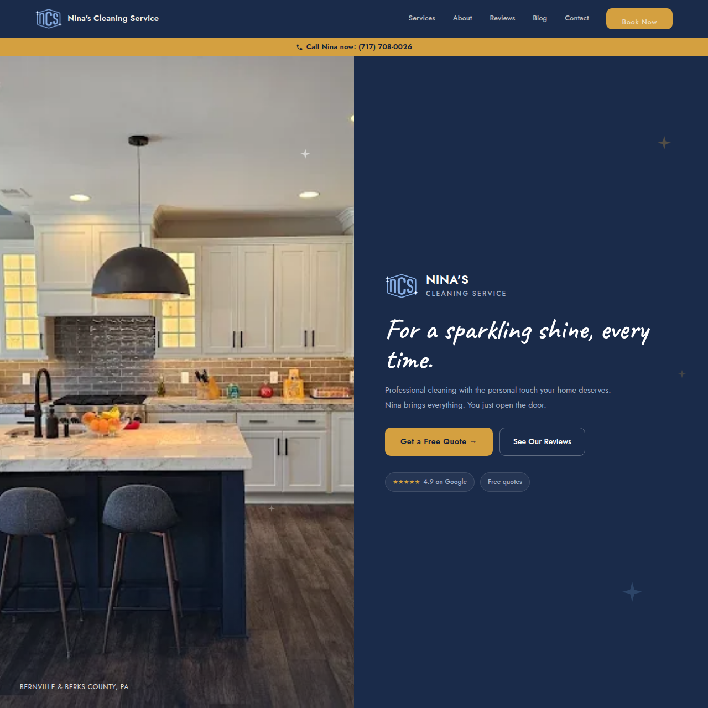

Nina's Cleaning Service
A 4.9-star cleaner with a word-of-mouth business and no site to match. I built the brand, the website, and the local search foundation.

The problem
Nina cleans homes in Berks County, and most work came by referral. A first-time visitor had nothing to judge the business by, and search results sent people to bigger competitors. The goal was a site that earned trust in the first screen and gave search engines clear signals about where Nina works.
Brand direction
I explored four logo directions and four whole-site mockups, then reviewed them with Nina. Nina approved a photo-led split layout paired with the new logo, so the brand is built on navy, gold, and cream, with the logo blue as a supporting color.
- Type: Caveat script for the hero name, Cormorant Garamond for headings, Jost for body text.
- Accessibility: the bright gold fails contrast as text on cream, so I added a darker gold for text and kept the bright one for buttons and navy backgrounds.
- Hero: a full-bleed photo beside a navy panel. The logo lockup is the badge image plus real HTML text, not a flattened image, so it stays sharp and readable by search engines.
Build
The site is plain static HTML, CSS, and JavaScript with no build step. It is fast, cheap to host, and easy to hand over. Nav and footer render from one shared script, so a change happens in one place across all pages. It deploys automatically from GitHub to Netlify on a custom domain.
Local search
An audit of the live site led to a short sprint focused on the places people actually search from.
- An FAQ page with structured data, written from real customer questions.
- Ten town pages (Bernville, Wyomissing, Sinking Spring, Reading and more), each with its own copy rather than a swapped city name.
- LocalBusiness schema with service catalog and rating.
- A blog of practical guides, such as move-out checklists and what to ask before hiring a cleaner.
- Google Business Profile guidance and directory listings.
Outcome
The site is live at ninascleaningservicellc.com with the review proof front and center. I am still collecting ranking and lead data, so I am not quoting traffic or booking numbers here. A progress report for June and July 2026 covers what shipped.